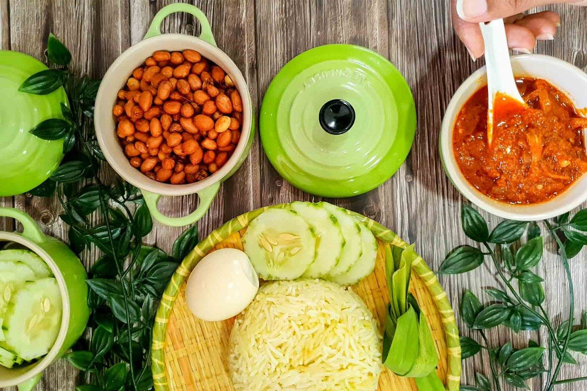

Nasi Lemak Sambal Ikan Bilis
Nasi lemak is a Malaysian meal that comprises of aromatic rice cooked in coconut milk and pandan leaves. It's popular in Malaysia, where it's considered the national dish. It is also very easy to make. Check out for the recipes below!

INGREDIENTS
Nasi lemak rice:
2 cups of white rice
2.5 cups coconut milk
3 pandan leaves
2 inch ginger
salt
Sambal ikan bilis:
1-2 cups anchovies
1 cup of oil for frying
2 pandan leaves
1 cup of water
2 large onions
2 tablespoon of brown sugar
salt
Spicy paste:
15-20 dried red chilies
6-8 cloves of garlic
1 tomato
4-5 shallots
3 medium size red onions
1 handful of anchovies
1-1.5 cup water
HOW TO MAKE
Nasi lemak rice:
- Rinse the rice 3 times and drain the water, then place the washed rice into the rice cooker.
- Then add the coconut milk, pandan leaves, a pinch of salt and ginger.
- Cook the rice for about 20 to 30 minutes.
Sambal ikan bilis:
- Blend dried red chilies, garlic, tomato, shallots, red onions and anchovies with water to make a spice paste.
- Heat the cooking oil in a pan on medium heat. Add the spice paste and fry until the oil separates.
- Add pandan leaves and water. Fry until it reduces to half its volume.
- Add onion, brown sugar and salt to taste. Let it simmer with a closed lid for 10 to 15 minutes.
- When the sambal has thickened, add the fried anchovies.
- Mix it well.